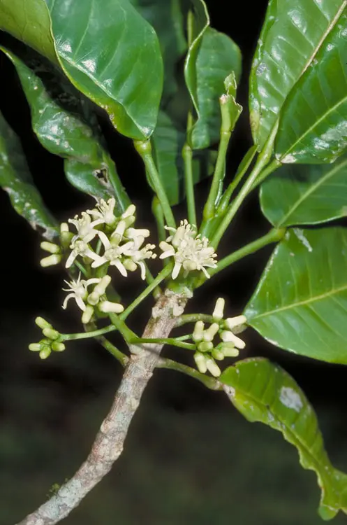

Wild fruit · Jan–Apr
Lemon aspen
Acronychia acidula
Also called Lemon aspen
Lemon aspen is a wild fruit you can forage from January to April in Tropical north and Subtropical east coast. Small rainforest tree with pale yellow, intensely citrus fruit.

When is lemon aspen in season in Australia?
Lemon aspen is usually in season January to April. Timing shifts with weather, latitude and altitude.
Where does lemon aspen grow in Australia?
Lemon aspen grows in New South Wales, Northern Territory, Queensland, Western Australia. Regions: Tropical north, Subtropical east coast.
How do you recognise lemon aspen?
Small rainforest tree with pale yellow, intensely citrus fruit.
How do you harvest lemon aspen?
Pick only fully ripe fruit that comes away easily, into a shallow container so it doesn't crush. Leave plenty on the plant for birds and wildlife.
How do you eat lemon aspen?
Juice in dressings, desserts and drinks.
How do you store lemon aspen?
Freeze.
What is lemon aspen good for?
Vitamin C.
What can you cook with lemon aspen?
- Lemon aspen spritz: Lemon aspen juice with soda and native mint.
- Oysters with lemon aspen: Rock oysters with a lemon aspen dressing.